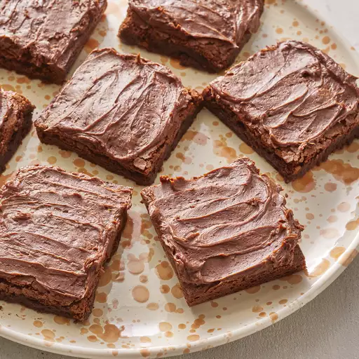

This brownie recipe makes rich, fudgy brownies that always turn out well. They're topped with homemade chocolate frosting to make the best brownies ever!
Brownies
Looking for the best brownie recipe on the internet? You've come to the right place! These rich, fudgy brownies are topped with a decadent homemade frosting. The Allrecipes community can't get enough — this top-rated brownie recipe is one of our most popular desserts ever!
You'll know the brownies are done baking when the top is dry and the edges are pulling away from the pan. Baked in an oven preheated to 350 degrees F, the brownies should be ready after about 25 to 30 minutes.